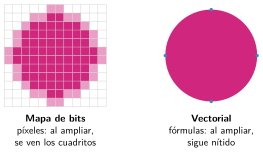

La imagen digital: formatos y resolución
Criterios: 6a, 6c
🤔 Pienso10 min
Qué hago aquí: Piensa un momento y contesta con lo que ya sabes. No pasa nada si no lo sabes: es para empezar.
Amplía mucho una foto en el ordenador. ¿Qué ves? Haz lo mismo con un icono de Word. ¿Pasa lo mismo?
📖 Leo y aprendo40 min
Qué hago aquí: Lee despacio, mira los dibujos y los ejemplos, y quédate con la idea clave del final.
Una imagen digital puede ser de dos tipos:

Las fotos son mapas de bits (bitmap): una cuadrícula de píxeles, cada uno de un color. Los logos, los iconos y los dibujos sencillos suelen ser vectoriales: se guardan como fórmulas (líneas, curvas, rellenos) y se pueden ampliar sin perder calidad.
Los colores se forman de dos maneras: RGB (rojo, verde y azul de luz) para las pantallas y CMYK (cian, magenta, amarillo y negro de tinta) para la imprenta.
| Formato | Tipo | Uso |
|---|---|---|
| JPG / JPEG | mapa de bits, con pérdida | Fotos para web y correo; pesa poco |
| PNG | mapa de bits, sin pérdida | Logos, capturas y fondos transparentes |
| GIF | mapa de bits, 256 colores | Animaciones cortas |
| WEBP | mapa de bits, con o sin pérdida | Fotos en webs modernas; pesa menos que JPG |
| HEIC | mapa de bits, con pérdida | Fotos de los móviles iPhone |
| TIFF | mapa de bits, sin pérdida | Imprenta y escáner; pesa mucho |
| SVG | vectorial | Logos e iconos para web |
| PDF / AI / EPS | vectorial (o mixto) | Logos e imprenta |
La compresión reduce lo que pesa el archivo: con pérdida (JPG) quita información que casi no se ve; sin pérdida (PNG) la conserva toda.
✏️ Hago160 min
Qué hago aquí: Haz las actividades en orden. Empieza siempre por las básicas.
Elige el formato: a) foto de un producto para la web; b) logo con fondo transparente; c) animación de felicitación; d) logo para imprimir en una lona grande; e) foto para un folleto de imprenta.
Mira las propiedades de una foto de tu móvil (clic derecho › Propiedades › Detalles): dimensiones, resolución, tamaño del archivo y formato. ¿Para qué uso tiene demasiada calidad?
Una foto de 3000 × 2000 píxeles, ¿qué tamaño tendría impresa a 300 ppp? (Recuerda: 1 pulgada = 2,54 cm.)
Guarda la misma foto en JPG con calidad alta, media y baja, y en PNG. Compara el peso de cada archivo y la calidad. Haz una tabla con los resultados.
¿Por qué los colores de una foto se ven distintos en la pantalla y en la impresora? Explícalo con RGB y CMYK.
🚀 Amplío (si quieres saber más)
Qué hago aquí: ¿Has terminado? Lee la curiosidad o elige el reto. Es voluntario.
Investiga qué es la profundidad de color (8 bits, 16 bits) y cuántos colores puede tener una imagen de 24 bits.
✅ Compruebo10 min
Qué hago aquí: Contesta sin mirar la ficha y marca cómo lo llevas.